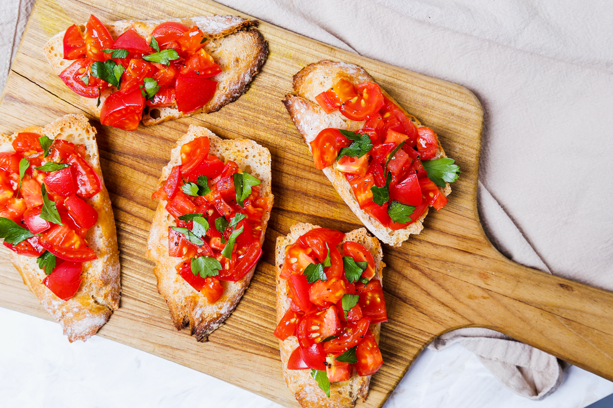
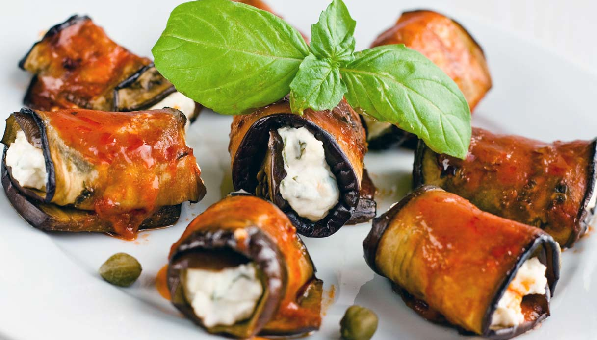

Verde Zafferano

Antipasti
Bruschetta al Pomodoro
Ingredienti:
- Pomodori freschi
- Pane italiano
- Aglio
- Basilico fresco
- Olio d'oliva
- Pepe nero
- Sale
Istruzioni:
- Tosta il pane italiano.
- Taglia i pomodori e l'aglio a pezzetti.
- Mescola i pomodori, l'aglio, il basilico, l'olio d'oliva, il pepe nero e il sale in una ciotola.
- Metti la miscela sopra il pane tostato.
- Servi e gusta!

Involtini di Melanzane
Ingredienti:
- Melanzane
- Formaggio ricotta
- Pomodoro fresco
- Basilico fresco
- Olio d'oliva
- Pepe nero
- Origano
- Sale
Istruzioni:
- Taglia le melanzane a fette sottili e griglialele.
- Mescola la ricotta, il pomodoro, il basilico, l'origano, l'olio d'oliva, il pepe nero e il sale.
- Metti una cucchiaiata di ripieno su ogni fetta di melanzana e arrotola.
- Metti gli involtini in una teglia e cuocili in forno.
- Servi caldi.

Caprese Salad
Ingredienti:
- Pomodori maturi
- Mozzarella di bufala
- Basilico fresco
- Olio d'oliva
- Aceto balsamico
- Pepe nero
- Sale
Istruzioni:
- Taglia i pomodori e la mozzarella a fette.
- Disponi alternativamente fette di pomodoro e mozzarella su un piatto.
- Cospargi il basilico sopra gli strati.
- Condisci con olio d'oliva, aceto balsamico, pepe nero e sale.
- Servi fresco.